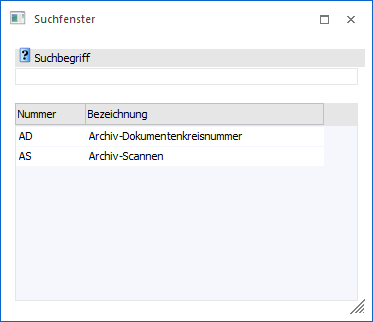
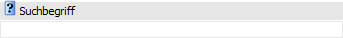
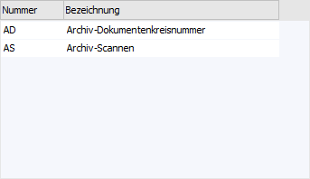

Wenn der Fokus in dem Feld "Nummernkreis" liegt und das Lupen-Symbol bzw. die Taste F9 gedrückt wird, dann öffnet sich das Programm "Suchfenster". An dieser Stelle kann nach bereits angelegten Archiv-Nummernkreisen gesucht werden.
Hinweis
Wenn in dem Feld "Nummernkreis" ein Teil der gesuchten Nummer oder Bezeichnung eingetragen wurde und die Taste F9 gedrückt wird, dann wird diese Eingabe als Suchbegriff übernommen.

Suchbegriff

Ø Suchbegriff
Die Auswahl kann durch die Eingabe eines Suchbegriffs eingeschränkt werden. Die Suche erfolgt in dem Feld "Nummer" und "Bezeichnung".
Tabelle "Suchergebnis"

In der Tabelle werden nach Auslösen der Suche (bestätigen des Suchbegriffs) die gefundenen Nummernkreise angezeigt. Per Doppelklick, Enter-Taste, Button "Ok" oder Taste F5 kann der ausgewählte Kreis anschließend in das Ausgangsfenster übernommen werden.
Hinweis
Wird nur ein passender Datensatz gefunden, dann wird dieser sofort in das Ausgangsfenster übernommen, ohne dass die Selektion nochmals bestätigt werden muss.
Buttons

Ø Ok
Durch Anwahl des Buttons "Ok" bzw. der Taste F5 wird der markierte Nummernkreis in das Ausgangsfenster übernommen.
Ø Ende
Durch Anwahl des Buttons "Ende" bzw. der Taste ESC wird das Fenster geschlossen.